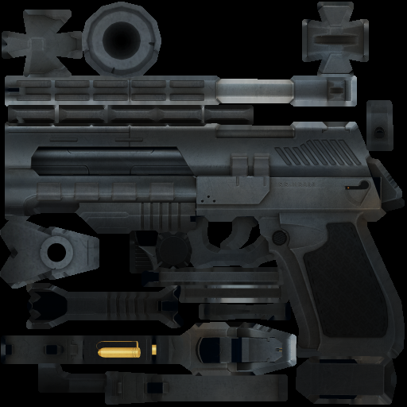
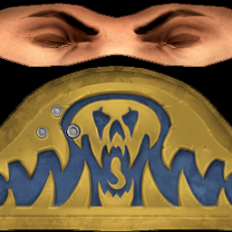
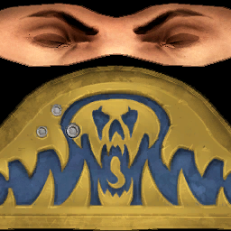
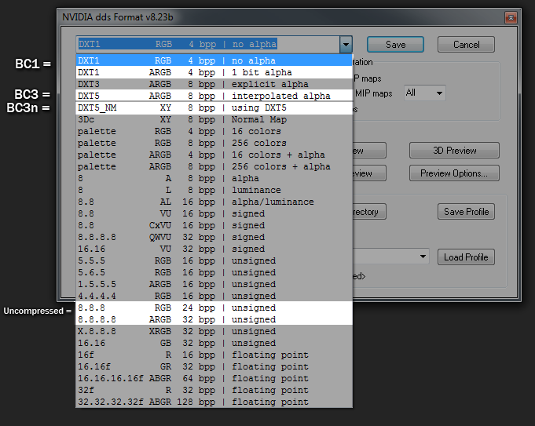

Introduction
Torque 3D is capable of using DDS compressed textures and is in fact optimized
for them. This article is intended to help you to understand the different
compression options available and how you can use them to reduce distribution
package size while maintaining high visual quality in your titles.
Required Knowledge
- Basic understanding of Textures and their uses in games.
Power of 2 Rule
Because of limitations on most Video Cards (GPUs), the dimensions of a texture must be a power of 2 number. Really, what it comes down to is on pretty much any platform past 2007 (post iPhone) it is safe to use one of the following numbers for either the height or width (in pixels) of the image: 4, 8, 16, 32, 64, 128, 256, 512, or 1024. If you're aiming at the current generation of consoles (xbox 360, ps3) or PC's newer than 2005 then you should be able to go as high as 2048. While most games will use square dimensions (ex: 1024x1024), you can really do any power of 2 combination for width and height. So 128x1024, 64x256, and 512x2 would all be valid dimensions.
If you accidentally save out an image that isn’t a power of 2 size the GPU will automatically scale it down to the next closest size,H which increases load time and reduces your image quality. If you’re not sure what your target platform supports, speak to a
graphics programmer on your team or do a quick web search.
The DDS Image Format
While Torque 3D can load many different image formats, for most projects we recommend that you use DDS for all
of your images that will ship with the final game. This next section will dig pretty deeply into why and how to take advantage of DDS images.
One thing to understand about how game engines load images is that before they are loaded into memory they must first be converted to a format that can be quickly accessed by the GPU. This involves creating mip-maps (scaled down versions of the image) and either compressing the image so it takes up less video memory or leaving it uncompressed (which would use 8 times more memory than the average texture in most video games). DDS however can skip this step because it is actually a container for the same exact formats that the GPU needs.
Something else to consider is texture sizes on disk and sizes when they're packaged for the installer (which we roughly determine by zipping it):
|

|
|
512x512 Texture used for testing
|
|
JPG (80% Quality) |
PNG (24bit, No Alpha) |
DDS (BC1) |
DDS (BC3) |
| Unzipped |
63kb |
224kb |
170kb |
341kb |
| Zipped |
62kb |
224kb |
84kb |
97kb |
At this point we can see the major pros and cons of DDS that should help you determine if it's right for your project:
- PRO: Loads faster
- PRO: Fewer artifacts when compared to converting a lossy format (like JPEG) at runtime.
- PRO: Install packaged (zipped) size is smaller when compared to PNG (non-lossy).
- CON: Install packaged (zipped) size is larger when compared to JPEG (lossy).
- CON: Size on disk is larger than other formats.
Now that we understand the basic reasons why DDS is used in most modern games, it’s time to get into what types of compression to use for different situations. A DDS file is really a container for different types of image compression that are optimized for how the texture is intended to be used. So instead of just a percentage of compression that you get when saving to a JPEG, you have names for different types of compression that have their own advantages and disadvantages in terms of quality and file size. There are a
number of different types, but for the majority of textures and for most developers there are only 4 types that (as of 10/2011) you really need to be aware of:
- Uncompressed
- BC1 (8:1 compression or 6:1 if using alpha. Known as DXT1 prior to DirectX 10)
- BC3 (4:1 compression. Known as DXT5 prior to DirectX 10)
- BC3n (4:1 compression. Specifically for normal maps)
Here are some images comparing artifacts caused by compression using BC1 and BC3:
Soldier Imperial Sample
An example of the compression artifacts you might get from most textures. As you can see, for most diffuse and specular textures we can compress to BC1 and not expect to see many artifacts.
(Use Ctrl + Wheel Up/Down or Ctrl + = / - to get your browser to zoom in/out; Ctrl + 0 to reset zoom)
|
|

|
|
Uncompressed
|
|

|
|
BC1 Compression and Exaggerated Difference
42.8kb (30.5kb zipped)
|
|
|
|
BC3 Compression and Exaggerated Difference
85.4kb (34.7kb zipped)
|
GarageGames Logo Sample
An example that shows differences with transparent images. From this we can see that BC1 only supports 1 bit alpha and BC3 can do gradient alphas.
|
|
|
|
|
|
Uncompressed
85.4kb (20.1kb zipped)
|
BC1
10.8kb (4.71kb zipped)
|
BC3
21.4kb (9.81kb zipped)
|
DDS Compression Guidlines
For most games, we can just follow these general guidelines:
- GUI Images:
In pretty much any situation you will want to use uncompressed DDS images for GUIs. Compressed GUI images would have too many artifacts to get the smooth clean edges you’d want for most GUIs.
- Energy Effects:
For most effects you will want to blend their materials using the “Add” transparency blending option. This adds the color value of the texture to whatever is behind the object, making black completely transparent and white fully visible. This means we don’t need the alpha and we can just use BC1 with no alpha.
- Decals:
Because decal polygons are sorted differently than shape polygons, it can take advantage of full range transparency (0%, 100%, and everything in between). In this case we would usually want to use BC3.
- Diffuse Textures without Transparency:
For most textures that don’t need an alpha map (diffuse, specular, etc.) you should be fine using BC1 without the alpha.
- Diffuse Textures with Transparency:
In most situations when making a transparent material you’ll want to turn on Alpha Threshold (aka Alpha Test) to avoid sorting issues. This makes the transparent pixels be interperted as either 100% or 0% with no values in between. So for situations like this BC1 with the alpha included works great because its transparency is stored as either black or white.
- Specular Maps:
Since alpha isn’t used in most cases for the specular map and we don’t usually need it to be very accurate, BC1 without alpha should do fine in most cases.
- Normal Maps:
Normal maps don’t compress very well when using most DDS compression algorithms. This is because compression formats like BC1 and BC3 are designed for standard color textures, where the artifacts aren’t very noticable. But because normal maps require a different type of accuracy for calculating shading, the same artifacts that wouldn’t be visible in a diffuse texture are very noticable when rendered as normals. Because of this you should use BC3n, which is really just BC3 but before compressing the image it modifies it to reduce artifacts in normal maps. In Torque
3D, if you try to use a BC3 compressed DDS in the normal map slot it will assume that it was saved using the BC3n technique.
How to convert to DDS
There many tools for converting to DDS, and all get the job done pretty well. At GarageGames we use Nvidia Texture Tools, but for most users we recommend using the Photoshop DDS plugin by Nvidia.
The photoshop plugin is pretty straight forward; just save as DDS and a dialog will pop open with compression options. You’ll see here the names for BC1, BC3, and BC3n are called by their old names (DXT1, DXT5, and DXT5_NM). Here is a quick reference image:

References and Further reading:
Conclusion
You should now have a basic understanding of converting and using DDS compressed textures with Torque 3D.
|